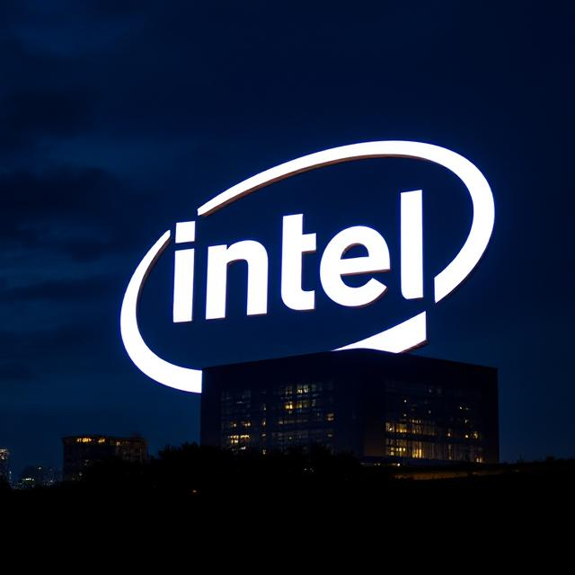

1968
Intel is Founded
1971
First Microprocessor (4004) Launches

1994
Begins Voluntary Environmental Reporting

2008
Largest Corporate Purchaser of Green Power

2010
First LEED-Certified Building

2012
Major Greenhouse Gas Reduction
2015
White House Climate Pledge

2023
99% Renewable Electricity and Net Positive Water
2030 & Beyond
Net-Zero and Sustainable Product Goals
Scroll to view timeline | Hover over cards to learn more!